DR.SC.DLPFC.RmdThe package can be loaded with the command:
library("DR.SC")
#> Loading required package: parallel
#> Loading required package: spatstat.geom
#> Warning: package 'spatstat.geom' was built under R version 4.1.3
#> Loading required package: spatstat.data
#> Warning: package 'spatstat.data' was built under R version 4.1.3
#> spatstat.geom 2.4-0
#> DR.SC : Joint dimension reduction and spatial clustering is conducted for
#> Single-cell RNA sequencing and spatial transcriptomics data, and more details can be referred to
#> Wei Liu, Xu Liao, Yi Yang, Huazhen Lin, Joe Yeong, Xiang Zhou, Xingjie Shi and Jin Liu. (2022) <doi:10.1093/nar/gkac219>. It is not only computationally efficient and scalable to the sample size increment, but also is capable of choosing the smoothness parameter and the number of clusters as well.To fit DR-SC model, we first require to create a Seurat object with meta.data including spatial coordinates in columns must named “row” (x coordinates) and “col” (y coordinates)!
We start this tutorial with creating the Seurat object. Users who are familar with Seurat object, can skip this subsection and go to next subsection.
First, we load the subset data of DLPFC 151510, dlpfc151510. Although it is saved as a Seurat object prepared for DR-SC, we re-create the Seurat object to show how to prepare the Seurat object for DR-SC.
data("dlpfc151510", package = 'DR.SC')Second, we create a Seurat object using the count matrix in dlpfc151510 and the spatial coordinates in the meta.data slot.
library(Seurat)
count <- dlpfc151510@assays$RNA@counts
meta_data <- data.frame(row=dlpfc151510@meta.data$row, col=dlpfc151510@meta.data$col, annotation=dlpfc151510$annotation)
row.names(meta_data) <- colnames(count)
## create Seurat object
dlpfc151510 <- CreateSeuratObject(counts=count, meta.data = meta_data)
head(dlpfc151510)
#> orig.ident nCount_RNA nFeature_RNA row col annotation
#> AAACAAGTATCTCCCA-1 SeuratProject 879 223 50 102 Layer1
#> AAACACCAATAACTGC-1 SeuratProject 887 251 59 19 Layer5
#> AAACAGAGCGACTCCT-1 SeuratProject 1109 253 14 94 Layer3
#> AAACAGCTTTCAGAAG-1 SeuratProject 1652 325 43 9 Layer4
#> AAACAGGGTCTATATT-1 SeuratProject 1389 289 47 13 Layer4
#> AAACAGTGTTCCTGGG-1 SeuratProject 758 226 73 43 Layer6
#> AAACATGGTGAGAGGA-1 SeuratProject 750 235 62 0 WM
#> AAACATTTCCCGGATT-1 SeuratProject 1946 332 61 97 Layer3
#> AAACCCGAACGAAATC-1 SeuratProject 798 244 45 115 Layer1
#> AAACCGGAAATGTTAA-1 SeuratProject 796 217 54 124 Layer2Until now, the data preparation with Seurat object format is finished, and we can go to next step: preprocessing.
This preprocessing includes Log-normalization and feature selection. Here we select highly variable genes for example first. The selected genes’ names are saved in “seu@assays$RNA@var.features”
# standard log-normalization
dlpfc151510 <- NormalizeData(dlpfc151510, verbose = F)
# choose 500 highly variable features
seu <- FindVariableFeatures(dlpfc151510, nfeatures = 500, verbose = F)
seu@assays$RNA@var.features[1:10]
#> [1] "ENSG00000123560" "ENSG00000197971" "ENSG00000122585" "ENSG00000211592"
#> [5] "ENSG00000244734" "ENSG00000110484" "ENSG00000091513" "ENSG00000109846"
#> [9] "ENSG00000173786" "ENSG00000131095"We fit the DR-SC model by using the highly variable genes.
### Given K
seu <- DR.SC(seu, K=7, platform = 'Visium', verbose=F)
#> Neighbors were identified for 4634 out of 4634 spots.
#> Fit DR-SC model...
#> Finish DR-SC model fitting
spatialPlotClusters(seu)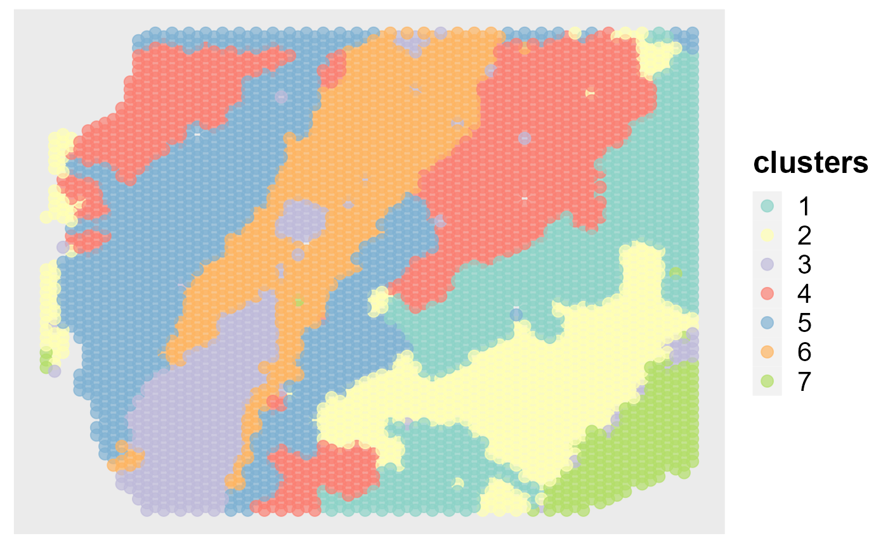
Show the tSNE plot based on the extracted features from DR-SC.
drscPlot(seu)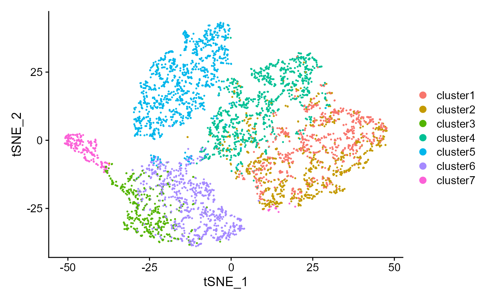
Show the UMAP plot based on the extracted features from DR-SC.
drscPlot(seu, visu.method = 'UMAP')
#> Warning: The default method for RunUMAP has changed from calling Python UMAP via reticulate to the R-native UWOT using the cosine metric
#> To use Python UMAP via reticulate, set umap.method to 'umap-learn' and metric to 'correlation'
#> This message will be shown once per session
#> Warning: Invalid name supplied, making object name syntactically valid. New
#> object name is RunUMAP.RNA.dr.sc; see ?make.names for more details on syntax
#> validity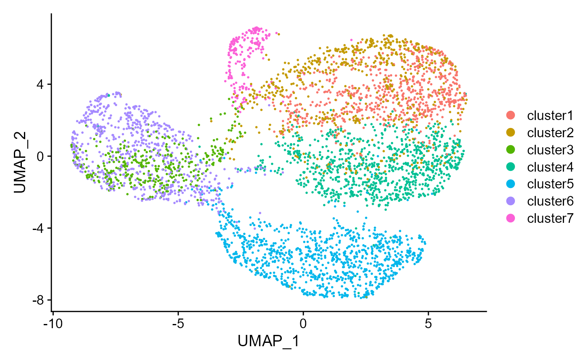
In spatially resolved transcriptomics data analysis, we recommend users using the spatially variable genes for analysis. We embeded the method SPARK-X (developed by Xiang Zhou’s Lab) into DR.SC package, which can be called using FindSVGs. The selected genes’ names are also saved in “seus@assays$RNA@var.features” and the order is determined by the statistical significance, where the gene with highest significance ranks first. We note there are some difference between SVGs and HVGs.
# choose 480 spatially variable features
seus <- FindSVGs(seu, nfeatures = 480)
#> Find the spatially variables genes by SPARK-X...
#> ## ===== SPARK-X INPUT INFORMATION ====
#> ## number of total samples: 4634
#> ## number of total genes: 500
#> ## Running with single core, may take some time
#> ## Testing With Projection Kernel
#> ## Testing With Gaussian Kernel 1
#> ## Testing With Gaussian Kernel 2
#> ## Testing With Gaussian Kernel 3
#> ## Testing With Gaussian Kernel 4
#> ## Testing With Gaussian Kernel 5
#> ## Testing With Cosine Kernel 1
#> ## Testing With Cosine Kernel 2
#> ## Testing With Cosine Kernel 3
#> ## Testing With Cosine Kernel 4
#> ## Testing With Cosine Kernel 5
seus@assays$RNA@var.features[1:10]
#> [1] "ENSG00000197971" "ENSG00000110484" "ENSG00000123560" "ENSG00000198804"
#> [5] "ENSG00000124935" "ENSG00000173786" "ENSG00000168314" "ENSG00000198727"
#> [9] "ENSG00000173432" "ENSG00000091513"We fit DR-SC model by using the selected spatially variable genes.
### Given K
seus <- DR.SC(seus, K=7, platform = 'Visium', verbose=T)
#> Neighbors were identified for 4634 out of 4634 spots.
#> Fit DR-SC model...
#> -------------------Calculate inital values-------------
#> -------------------Finish computing inital values-------------
#> -------------------Starting ICM-EM algortihm-------------
#> iter = 2, loglik= -1228522.642564, dloglik=0.999428
#> iter = 3, loglik= -1222070.073574, dloglik=0.005252
#> iter = 4, loglik= -1220229.244307, dloglik=0.001506
#> iter = 5, loglik= -1219175.850470, dloglik=0.000863
#> iter = 6, loglik= -1218496.647196, dloglik=0.000557
#> iter = 7, loglik= -1217959.809427, dloglik=0.000441
#> iter = 8, loglik= -1217552.576343, dloglik=0.000334
#> iter = 9, loglik= -1217209.187820, dloglik=0.000282
#> iter = 10, loglik= -1216928.461434, dloglik=0.000231
#> iter = 11, loglik= -1216689.528325, dloglik=0.000196
#> iter = 12, loglik= -1216479.388650, dloglik=0.000173
#> iter = 13, loglik= -1216298.431104, dloglik=0.000149
#> iter = 14, loglik= -1216134.346168, dloglik=0.000135
#> iter = 15, loglik= -1215985.318437, dloglik=0.000123
#> iter = 16, loglik= -1215854.370103, dloglik=0.000108
#> iter = 17, loglik= -1215739.339004, dloglik=0.000095
#> iter = 18, loglik= -1215634.316515, dloglik=0.000086
#> iter = 19, loglik= -1215526.012082, dloglik=0.000089
#> iter = 20, loglik= -1215417.093982, dloglik=0.000090
#> iter = 21, loglik= -1215331.186944, dloglik=0.000071
#> iter = 22, loglik= -1215249.364654, dloglik=0.000067
#> iter = 23, loglik= -1215167.058207, dloglik=0.000068
#> iter = 24, loglik= -1215100.725954, dloglik=0.000055
#> iter = 25, loglik= -1215037.260550, dloglik=0.000052
#> -------------------Complete!-------------
#> elasped time is :59.06
#> Finish DR-SC model fittingNext, we show the application of DR-SC in visualization. First, we can visualize the clusters from DR-SC on the spatial coordinates.
spatialPlotClusters(seus)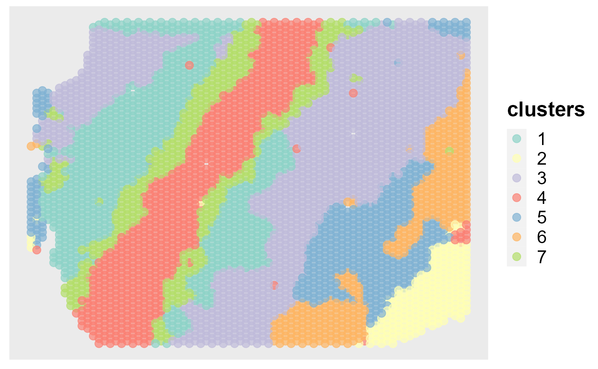
We can also visualize the clusters from DR-SC on the two-dimensional tSNE based on the extracted features from DR-SC.
drscPlot(seus)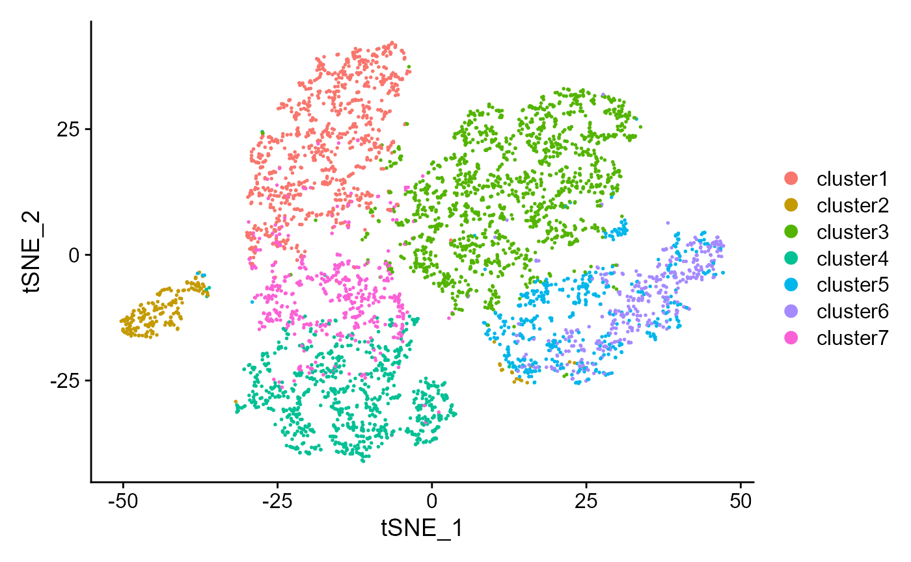 Similarly, can also visualize the clusters from DR-SC on the two-dimensional UMAP based on the extracted features from DR-SC.
drscPlot(seus, visu.method = 'UMAP')
#> Warning: Invalid name supplied, making object name syntactically valid. New
#> object name is RunUMAP.RNA.dr.sc; see ?make.names for more details on syntax
#> validity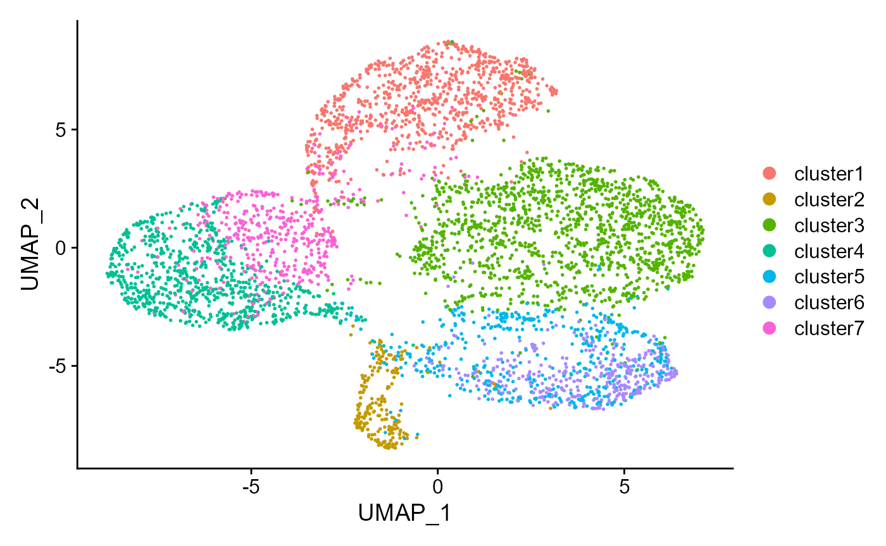
Since DR.SC uses the Seurat object to save results, all visualization functions in Seurat package can used to visualize the results of DR-SC, such as ridge plot, feature plot, dot plot and so on. ### Ridge plots we show the application of DR-SC in differential expression analysis. Find the marker genes in SVGs for each clusters.
SVGs <- topSVGs(seus, ntop = 400)
dat <- FindAllMarkers(seus, features = SVGs)
#> Calculating cluster cluster1
#> Calculating cluster cluster2
#> Calculating cluster cluster3
#> Calculating cluster cluster4
#> Calculating cluster cluster5
#> Calculating cluster cluster6
#> Calculating cluster cluster7
head(dat)
#> p_val avg_log2FC pct.1 pct.2 p_val_adj cluster
#> ENSG00000110484 6.391976e-207 -2.8930351 0.370 0.806 3.195988e-204 cluster1
#> ENSG00000124935 1.026265e-126 -2.4420247 0.186 0.613 5.131327e-124 cluster1
#> ENSG00000171617 1.987680e-91 0.7556269 0.963 0.772 9.938401e-89 cluster1
#> ENSG00000115756 4.320795e-76 0.9032286 0.748 0.423 2.160398e-73 cluster1
#> ENSG00000185499 8.148238e-66 -1.6087997 0.189 0.489 4.074119e-63 cluster1
#> ENSG00000162545 6.860146e-62 0.4809817 0.987 0.900 3.430073e-59 cluster1
#> gene
#> ENSG00000110484 ENSG00000110484
#> ENSG00000124935 ENSG00000124935
#> ENSG00000171617 ENSG00000171617
#> ENSG00000115756 ENSG00000115756
#> ENSG00000185499 ENSG00000185499
#> ENSG00000162545 ENSG00000162545
library(dplyr, verbose=F)
#> Warning: package 'dplyr' was built under R version 4.1.3
#>
#> Attaching package: 'dplyr'
#> The following objects are masked from 'package:stats':
#>
#> filter, lag
#> The following objects are masked from 'package:base':
#>
#> intersect, setdiff, setequal, union
top2 <- dat %>%
group_by(cluster) %>%
top_n(n = 2, wt = avg_log2FC)
top2
#> # A tibble: 14 x 7
#> # Groups: cluster [7]
#> p_val avg_log2FC pct.1 pct.2 p_val_adj cluster gene
#> <dbl> <dbl> <dbl> <dbl> <dbl> <fct> <chr>
#> 1 1.99e- 91 0.756 0.963 0.772 9.94e- 89 cluster1 ENSG00000171617
#> 2 4.32e- 76 0.903 0.748 0.423 2.16e- 73 cluster1 ENSG00000115756
#> 3 1.49e-126 3.69 0.995 0.79 7.47e-124 cluster2 ENSG00000197971
#> 4 1.29e-114 3.70 0.963 0.639 6.44e-112 cluster2 ENSG00000123560
#> 5 8.04e-177 0.962 0.975 0.613 4.02e-174 cluster3 ENSG00000110484
#> 6 1.58e-145 0.977 0.848 0.393 7.92e-143 cluster3 ENSG00000124935
#> 7 1.65e-254 2.45 0.91 0.65 8.26e-252 cluster4 ENSG00000131095
#> 8 4.27e- 66 1.88 0.472 0.261 2.14e- 63 cluster4 ENSG00000171885
#> 9 6.37e- 10 0.621 0.359 0.25 3.19e- 7 cluster5 ENSG00000152377
#> 10 5.79e- 8 0.631 0.169 0.093 2.90e- 5 cluster5 ENSG00000158258
#> 11 4.88e- 43 1.32 0.466 0.179 2.44e- 40 cluster6 ENSG00000183036
#> 12 4.89e- 40 1.03 0.537 0.23 2.44e- 37 cluster6 ENSG00000155886
#> 13 9.58e- 36 1.15 0.609 0.42 4.79e- 33 cluster7 ENSG00000145824
#> 14 1.47e- 6 0.772 0.257 0.181 7.34e- 4 cluster7 ENSG00000173432Visualize single cell expression distributions in each cluster from Seruat.
genes <- top2$gene[seq(1, 12, by=2)]
RidgePlot(seus, features = genes, ncol = 2)
#> Picking joint bandwidth of 0.263
#> Picking joint bandwidth of 0.236
#> Picking joint bandwidth of 0.378
#> Picking joint bandwidth of 0.31
#> Picking joint bandwidth of 0.188
#> Picking joint bandwidth of 0.0977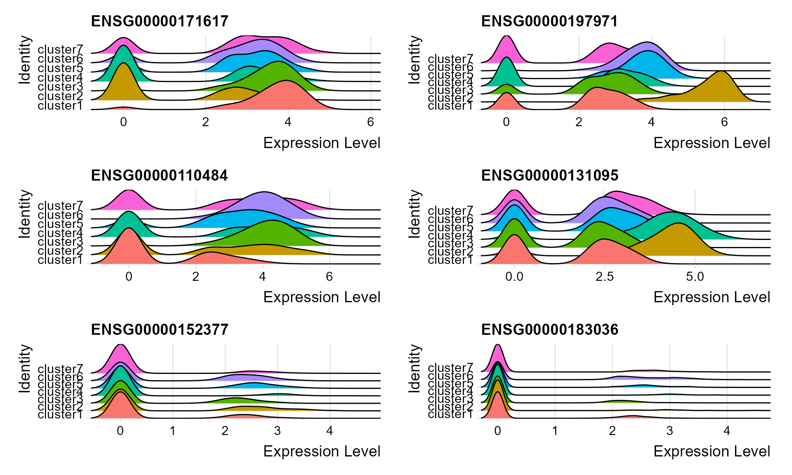 ### Violin plot
Visualize single cell expression distributions in each cluster
VlnPlot(seus, features = genes, ncol=2)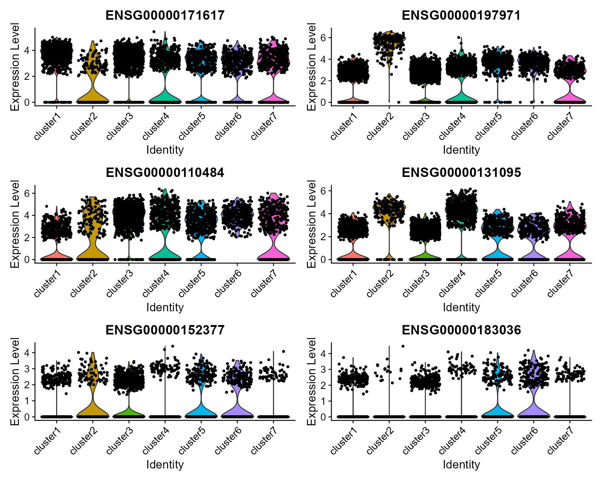
We extract tSNE based on the features from DR-SC and then visualize feature expression in the low-dimensional space
seus <- RunTSNE(seus, reduction="dr-sc", reduction.key='drsc_tSNE_')
#> Warning: Keys should be one or more alphanumeric characters followed by an
#> underscore, setting key from drsc_tSNE_ to drsctSNE_
#> Warning: All keys should be one or more alphanumeric characters followed by an
#> underscore '_', setting key to drsctSNE_
FeaturePlot(seus, features = genes, reduction = 'tsne' ,ncol=2)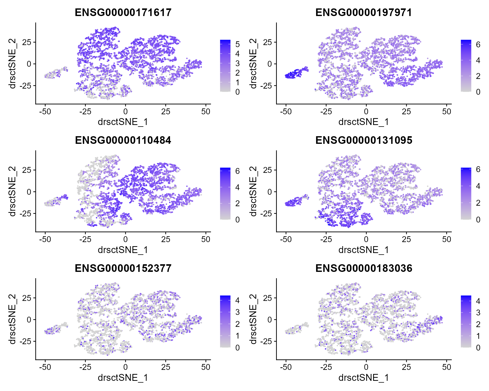
The size of the dot corresponds to the percentage of cells expressing the feature in each cluster. The color represents the average expression level
DotPlot(seus, features = genes)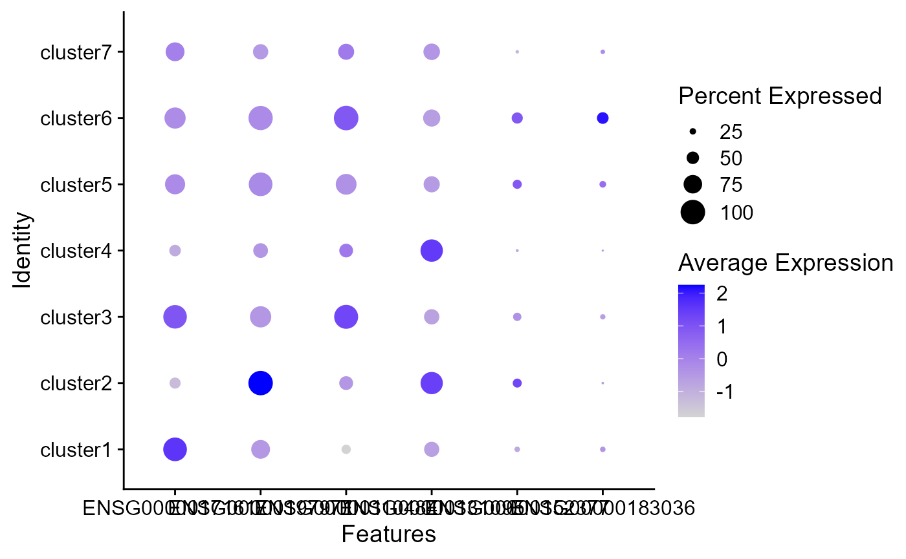
Single cell heatmap of feature expression
top20 <- dat %>%
group_by(cluster) %>%
top_n(n = 20, wt = avg_log2FC)
genes <- top20$gene
# standard scaling (no regression)
seus <- ScaleData(seus)
#> Centering and scaling data matrix
DoHeatmap(subset(seus, downsample = 500), features = genes, size = 5)
#> Warning: Invalid name supplied, making object name syntactically valid. New
#> object name is dr.sc; see ?make.names for more details on syntax validity
#> Warning: Cannot add objects with duplicate keys (offending key: DRSC_), setting
#> key to 'dr.sc_'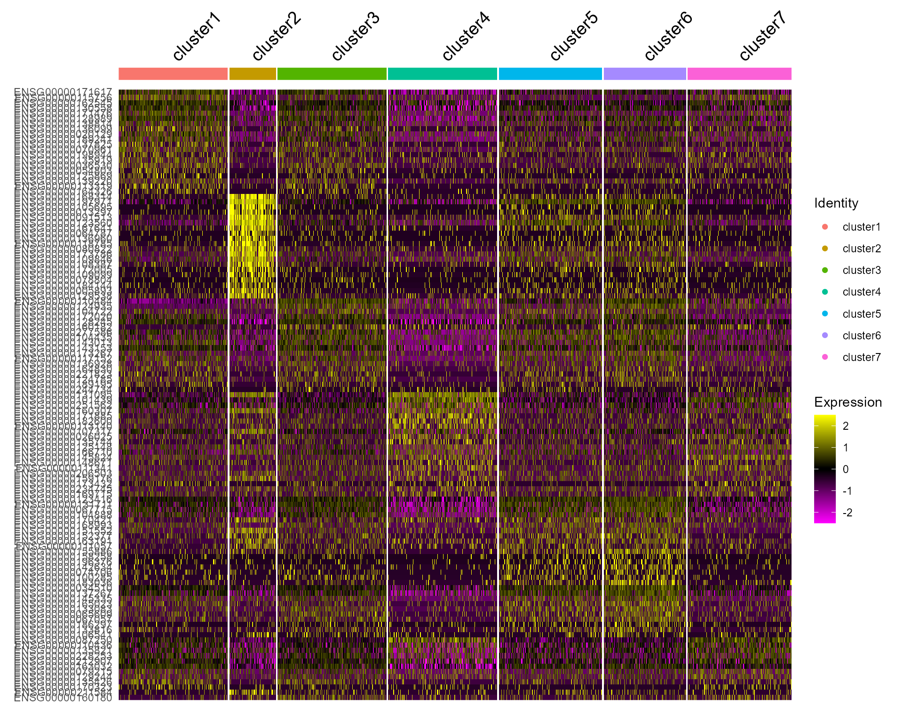
# choose spatially variable features
seus <- FindSVGs(seu, nfeatures = 480, verbose = F)We set the argument variable.type=‘SVGs’ (default option) to use the spatially variable genes.
### Given K
seus <- DR.SC(seus, K=3:9, platform = 'Visium', verbose=F)
#> Neighbors were identified for 4634 out of 4634 spots.
#> Fit DR-SC model...
#> Starting parallel computing intial values...
#> Finish DR-SC model fittingPlot the MBIC curve
seus <- selectModel(seus, pen.const = 0.8)
mbicPlot(seus)Show the spatial scatter plot for clusters
spatialPlotClusters(seus)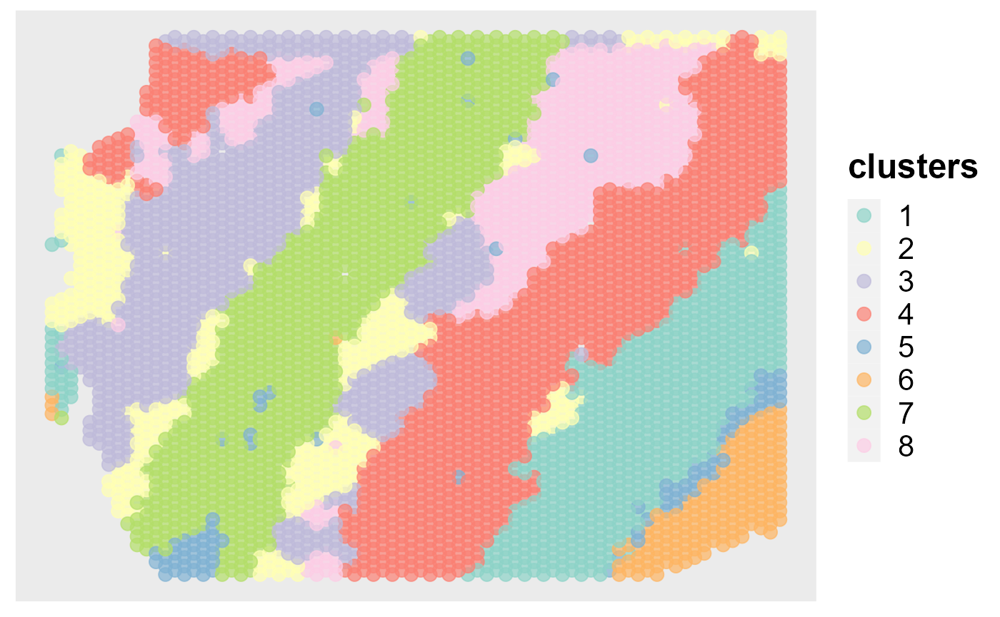
Show the tSNE plot based on the extracted features from DR-SC.
drscPlot(seus, dims=1:10)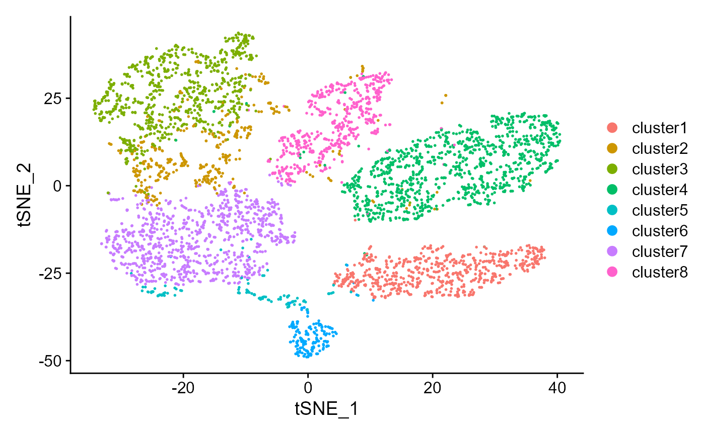
sessionInfo()
#> R version 4.1.2 (2021-11-01)
#> Platform: x86_64-w64-mingw32/x64 (64-bit)
#> Running under: Windows 10 x64 (build 22000)
#>
#> Matrix products: default
#>
#> locale:
#> [1] LC_COLLATE=English_Singapore.1252 LC_CTYPE=English_Singapore.1252
#> [3] LC_MONETARY=English_Singapore.1252 LC_NUMERIC=C
#> [5] LC_TIME=English_Singapore.1252
#> system code page: 936
#>
#> attached base packages:
#> [1] parallel stats graphics grDevices utils datasets methods
#> [8] base
#>
#> other attached packages:
#> [1] dplyr_1.0.9 sp_1.5-0 SeuratObject_4.1.0
#> [4] Seurat_4.1.1 DR.SC_2.9 spatstat.geom_2.4-0
#> [7] spatstat.data_2.2-0
#>
#> loaded via a namespace (and not attached):
#> [1] GiRaF_1.0.1 systemfonts_1.0.4 plyr_1.8.7
#> [4] igraph_1.3.2 lazyeval_0.2.2 splines_4.1.2
#> [7] listenv_0.8.0 scattermore_0.8 ggplot2_3.3.6
#> [10] digest_0.6.29 htmltools_0.5.2 fansi_1.0.3
#> [13] magrittr_2.0.3 memoise_2.0.1 tensor_1.5
#> [16] cluster_2.1.2 ROCR_1.0-11 limma_3.50.1
#> [19] globals_0.15.0 matrixStats_0.62.0 pkgdown_2.0.2
#> [22] spatstat.sparse_2.1-1 colorspace_2.0-3 ggrepel_0.9.1
#> [25] textshaping_0.3.6 xfun_0.29 crayon_1.5.1
#> [28] jsonlite_1.8.0 progressr_0.10.1 survival_3.2-13
#> [31] zoo_1.8-10 glue_1.6.2 polyclip_1.10-0
#> [34] gtable_0.3.0 leiden_0.4.2 future.apply_1.9.0
#> [37] BiocGenerics_0.40.0 abind_1.4-5 scales_1.2.0
#> [40] DBI_1.1.2 spatstat.random_2.2-0 miniUI_0.1.1.1
#> [43] Rcpp_1.0.8.3 viridisLite_0.4.0 xtable_1.8-4
#> [46] reticulate_1.25 spatstat.core_2.4-4 mclust_5.4.10
#> [49] stats4_4.1.2 htmlwidgets_1.5.4 httr_1.4.3
#> [52] RColorBrewer_1.1-3 ellipsis_0.3.2 ica_1.0-2
#> [55] pkgconfig_2.0.3 farver_2.1.0 sass_0.4.1
#> [58] uwot_0.1.11 deldir_1.0-6 utf8_1.2.2
#> [61] tidyselect_1.1.2 labeling_0.4.2 rlang_1.0.2
#> [64] reshape2_1.4.4 later_1.3.0 munsell_0.5.0
#> [67] tools_4.1.2 cachem_1.0.6 cli_3.2.0
#> [70] generics_0.1.2 ggridges_0.5.3 evaluate_0.15
#> [73] stringr_1.4.0 fastmap_1.1.0 yaml_2.3.5
#> [76] ragg_1.2.2 goftest_1.2-3 knitr_1.37
#> [79] fs_1.5.2 fitdistrplus_1.1-8 purrr_0.3.4
#> [82] RANN_2.6.1 pbapply_1.5-0 future_1.26.1
#> [85] nlme_3.1-155 mime_0.12 ggrastr_1.0.1
#> [88] compiler_4.1.2 rstudioapi_0.13 beeswarm_0.4.0
#> [91] plotly_4.10.0 png_0.1-7 spatstat.utils_2.3-1
#> [94] tibble_3.1.7 bslib_0.3.1 stringi_1.7.6
#> [97] highr_0.9 RSpectra_0.16-1 desc_1.4.0
#> [100] rgeos_0.5-9 lattice_0.20-45 Matrix_1.4-0
#> [103] vctrs_0.4.1 CompQuadForm_1.4.3 pillar_1.7.0
#> [106] lifecycle_1.0.1 lmtest_0.9-40 jquerylib_0.1.4
#> [109] RcppAnnoy_0.0.19 data.table_1.14.2 cowplot_1.1.1
#> [112] irlba_2.3.5 httpuv_1.6.5 patchwork_1.1.1
#> [115] R6_2.5.1 promises_1.2.0.1 KernSmooth_2.23-20
#> [118] gridExtra_2.3 vipor_0.4.5 parallelly_1.32.0
#> [121] codetools_0.2-18 MASS_7.3-55 assertthat_0.2.1
#> [124] rprojroot_2.0.3 withr_2.5.0 sctransform_0.3.3
#> [127] S4Vectors_0.32.3 mgcv_1.8-39 grid_4.1.2
#> [130] rpart_4.1.16 tidyr_1.2.0 rmarkdown_2.11
#> [133] Rtsne_0.16 shiny_1.7.1 ggbeeswarm_0.6.0